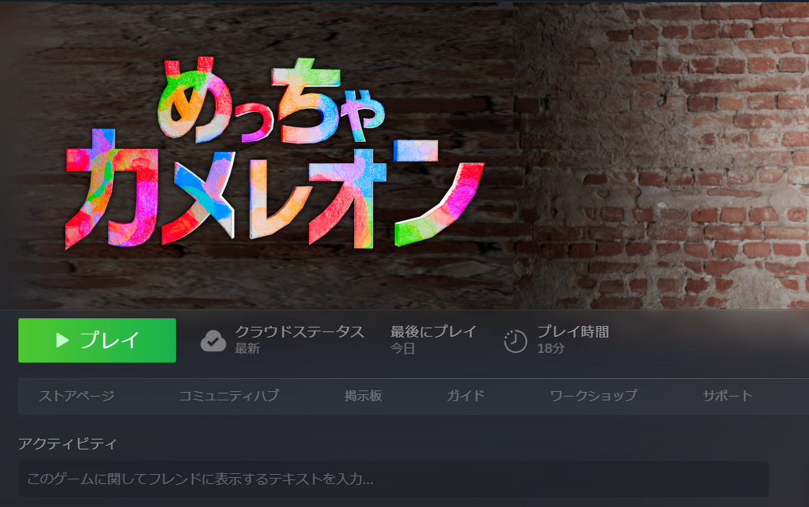
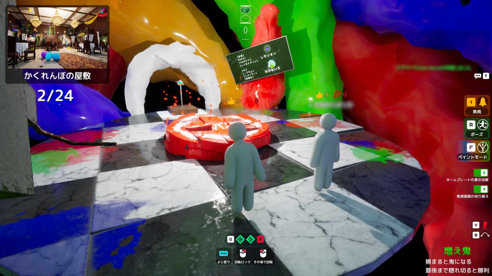

初心者
色より人の形を見る。
ランダムに走らない。
はじめてでも遊べる
めっちゃカメレオン取扱説明書
MECCHA CHAMELEON
Steamが初めてでも大丈夫。
このページだけで、最初の1回を遊べます。
色・形・動きを合わせよう！
公式 Steam公式で確認
実機 3.5.1で確認
プレイヤー ガイドや動画で確認
未確認 確かな説明がない
3.5.1の詳しい公式更新内容は未確認です。ゲーム画面の案内を最優先してください。
小学生は家の人に相談する。
本名や学校名を使わない。
最初は「Modなし」を選ぶ。
知らないリンクを開かない。
マイクはOFFでも遊べる。
Steam公式から入れます。
無料アカウントを作ります。
ゲーム名を検索します。
開発者名を確認して買います。
インストールを選びます。
「ライブラリ」から起動します。
| OS | Windows 10 64-bit |
|---|---|
| CPU | Intel Core i5 |
| 画像 | DirectX 11または12 |
| 容量 | 実機で約2.98GB |

カメレオンは景色に変身。鬼は時間内に全員を探します。
形を探す
音を聞く
見つけて撃つ
増え鬼：見つかった人も鬼になる。
ベーシック：鬼と隠れる側に分かれる。
ダブル：全員が隠れ、あとで探す。
逆算チキンレース：見逃し点を競う。
flowchart TD
A["起動"] --> B["部屋へ入る"]
B --> C{"役割"}
C -->|カメレオン| D["場所→ポーズ→ペイント"]
C -->|鬼| E["待機"]
D --> F["探索"]
E --> F
F --> G{"全員発見？"}
G -->|はい| H["鬼の勝ち"]
G -->|時間切れ| I["カメレオンの勝ち"]
| キー | 内容 |
|---|---|
| W A S D | 前・左・後ろ・右へ動く |
| Shift＋WASD | 速く動く |
| Space | ジャンプ／よじ登る |
| F | ペイントを開く／閉じる |
| R＋マウス | ポーズを選び、離して決定 |
| Q | 分身を作る |
| X | 分身を全部消す |
| 1 | 笛で挑発 |
| 2 | 名前表示を切り替える |
| 3 | 貫通描画を切り替える |
| T | 文字チャット |
| V | 自分のマイクON／OFF |
| B | 聞こえる声ON／OFF |
| Esc | 戻る／閉じる |
| 操作 | ふつう | ペイント | 鬼 |
|---|---|---|---|
| マウス移動 | 見る | 筆を動かす | ねらう |
| 左クリック | 回転ロックと組合せ | 体をぬる | 撃つ |
| 右クリック | その場回転と組合せ | 筆の太さ | 視点切替 |
| 中央ボタン | ― | 体を見る角度 | ― |
| ホイール | カメラ距離 | ズーム | ― |
同じキーでも、役割や画面で動きが変わります。

時間内に全員を見つける。
flowchart LR
A["探索開始"] --> B{"全員を発見？"}
B -->|はい| C["鬼の勝ち"]
B -->|時間切れ| D["カメレオンの勝ち"]
負けても、答え合わせで場所を覚えられます。
入口で一度止まる。
部屋を小さく分ける。
上から下へ見る。
頭や肩の丸みを探す。
横へ動き、厚みを見る。
確かめてから撃つ。
色より人の形を見る。
ランダムに走らない。
同じ物を比べる。
横から影を見る。
入口の死角を読む。
笛の方向と音量を使う。
Qで作り、Xで全部消します。実機ロビーでは2個分の表示を確認しました。
分身へ当たった時の全モード共通処理は未確認です。
| 操作 | 内容 |
|---|---|
| 左クリック | 体をぬる |
| 右クリック＋左右 | 筆の太さを変える |
| Alt＋左ドラッグ | 体を見る角度を変える |
| 中央ボタン＋移動 | 体を見る角度を変える |
まず「Spaceを押したまま→色へ合わせる→離す」を試します。
だめなら「Spaceを1回→景色を左クリック」を試します。
最新ガイドの説明が一致しないため、共通操作は未確認です。
金属の光り方
ざらざら感
自分から光る強さ
絵が苦手でも大丈夫です。「場所 → ポーズ → 色」の順にすると、むずかしさが下がります。
大切：家具や飾りの場所は、マップの更新・ランダム配置・Modで変わります。同じ物がない時は、「物の端」「色の境目」「物が多い所」という形だけまねしてください。
| 見つかった理由 | 次の1回で直すこと |
|---|---|
| 頭や肩が人の形に見えた | 棚の端へ寄り、小さいポーズにする。 |
| 横から見ると体が出ていた | 平らな壁をやめ、でこぼこの物へ移る。 |
| 色は近いのに光っていた | ラフネスを上げ、つやを減らす。 |
| 白い手や足が残っていた | カメラを回し、背中と足の裏も見る。 |
| 笛の後にすぐ見つかった | 音を聞かれた前提で、動かず待つ。 |
| 暗い角を先に調べられた | 次は物の多い明るめの場所も試す。 |
物の端へ付く。
2色までにする。
白を全部ぬる。
色の境目を使う。
入口の角度でぬる。
毎回場所を変える。
影と光沢も合わせる。
物の形を借りる。
鬼の視線を先に読む。
最初のおすすめ：「棚の横」「机の脚」「壁と床の境目」を1回ずつ試します。見つかったら、色より先に場所とポーズを変えてみましょう。
WASD、マウス、Shift、Space
Rを押す、選ぶ、離す
F、1色、全身、白チェック
家具の横、小さく、動かない
形を見て、左クリック
| 失敗 | 直し方 |
|---|---|
| 先にぬる | 場所を先に決める |
| 白が残る | 頭上と足首を見る |
| 色が多い | 最初は2色まで |
| 人のように立つ | Rで形を小さくする |
| 探索中に直す | 探索前に止まる |
| 暗い角だけ使う | 家具や模様も使う |
| 鬼で連射する | 形を見てから撃つ |
| 本名を使う | ニックネームにする |
| マイクを忘れる | Vと赤い印を見る |
| 知らないModへ入る | 最初はModなし |
通常対戦は2人以上です。実機では最大人数1の非公開部屋とロビーを確認しました。一人練習モードは未確認です。
公式は2〜10人をおすすめしています。
有料です。価格は国とセールで変わります。
はい。タイトル画面の「日本語」を選びます。
公式ストアはWindowsのみです。Mac対応は未確認です。
対応が進んでいますが、完全対応は未確認です。ペイントはマウスがおすすめです。
公式の確認済み表示は未確認です。
Steamの「ライブラリ」→ゲーム名→「プレイ」です。
タイトル下の「日本語」を選びます。Steamの言語設定も確認します。
「サーバーを探す」→「パブリック」→「参加」です。
全員のversion、部屋名、パスワード、地域、空き人数を確認します。
観戦中の時は、今の回が終わるまで待ちます。
見る人の切り替えや自由カメラが使えます。4キーの案内があります。
「設定」→「ゲーム全般」→「視点感度」を下げます。
モーションブラーを0%にし、画面を小さくして休みます。
パフォーマンスモードをONにし、画質を下げます。
役割と画面を確認し、Fで開き直します。日本語入力もOFFにします。
Spaceを押したまま色へ合わせて離します。だめならSpaceを1回押して景色を左クリックします。
右クリックを押したまま、マウスを右へ動かします。
正しい色を上からぬります。元に戻す操作は未確認です。
Alt＋左ドラッグか、中央ボタンを押しながら動かします。
Rを押したまま選び、Rを離します。
実機ロビーでは2個分を確認しました。設定や更新で変わる可能性があります。
Xですべて消します。1体だけ消す方法は未確認です。
本体も発見扱いというプレイヤー情報があります。共通処理は未確認です。
Vです。赤いマイク印も確認します。
Bで聞こえるボイスを切り替えます。
Tです。いやな言葉を見たら部屋を出ます。
場所を音で知らせる挑発です。1で鳴らします。
部屋設定で変わります。赤い四角が出たら残りを見ます。
基本は時間内に全員を見つけます。
基本は1人でも時間まで残ります。
見つかった人も鬼になります。
プレイヤーが追加する地図などです。最初はModなしを選びます。
既知の問題は3.1.0で修正済みです。最新版にし、知らないリンクを開きません。
公式Steamニュースから招待を開いてください。2026年7月26日の案内は kUh2PNPjpq です。
公式は配信を許可しています。タイトルにゲーム名を入れます。
SteamとPCを再起動し、最新版とゲームファイルを確認します。
WASD移動
Shift速く動く
Spaceジャンプ・よじ登り
Fペイント
Rポーズ
Q分身
X分身を消す
1笛
2名前表示
3貫通描画
T文字チャット
Vマイク
B聞こえる声
Esc戻る
| 困ったこと | 試すこと |
|---|---|
| 起動しない | 必ずSteamから起動する |
| 部屋へ入れない | version、空き、地域、パスワード |
| 画面が重い | パフォーマンスモード、画質を下げる |
| 画面酔い | モーションブラー0%、休憩 |
| 音がない | B、ゲーム音量、Windows音量 |
| 声が届く | VをOFF、赤いマイク印 |
| キーがきかない | 日本語入力OFF、役割を確認 |
| 知らないMod | 退出し、Modなしの部屋へ |
Steam以外の「修正版」を入れない。
知らないファイルやリンクを開かない。
困ったら家の人へ相談する。
3.5.1の詳しい公式変更点は未確認です。
最初はこれだけ
WASDで場所へ行く。
Rで小さくなる。
Fで1色ぬる。
鬼が来たら止まる。
WASDで歩く。
人の形を探す。
あやしい所を撃つ。
横からも見る。
初回調査：2026年8月3日／隠れ方のコツ更新：2026年8月11日
実機では、version、設定、非公開部屋、ロビー、キー案内を確認しました。公開対戦の全モード、3Dスポイトの共通操作、全コントローラーは未確認です。